Results
Uncertainty shocks in the US economy, 1970Q1-2019Q4: all outputs of the real-data application
Every figure and table produced by examples/03_us_uncertainty_gpvar8.py, 02_simulation_study.py, 01_gp_regression_illustration.py and 04_forecast_evaluation.py on the bundled data. Responses are in standard-deviation units of the standardised data unless stated otherwise; bands are 68 % posterior credible sets; figures are also available as vector PDFs and tables as LaTeX (booktabs) and CSV in outputs/ of the repository.
Real economic example: uncertainty shocks in the US (GP-VAR-8)
examples/03_us_uncertainty_gpvar8.py re-runs the paper's Section 5–6 analysis on real data.
5.1 Data
Quarterly US data 1970Q1–2019Q4 (T = 200), the eight variables of the paper's GP-VAR-8 (Online Appendix Table B.1):
| Variable | Source series | Transformation |
|---|---|---|
| UNC | JLN macroeconomic uncertainty, h = 1 (Jurado, Ludvigson and Ng, 2015; quarterly average) | level |
| RGDP | GDPC1, real GDP | year-on-year growth (%) |
| EMP | CE16OV, civilian employment | year-on-year growth (%) |
| AWH | AWHMAN, average weekly hours, manufacturing | level |
| CPI | CPIAUCSL, consumer price index | year-on-year inflation (%) |
| AHE | CES3000000008x, real average hourly earnings, manufacturing | year-on-year growth (%) |
| FFR | FEDFUNDS, effective federal funds rate | level (%) |
| SP500 | S&P 500 composite | quarter-on-quarter return (%) |
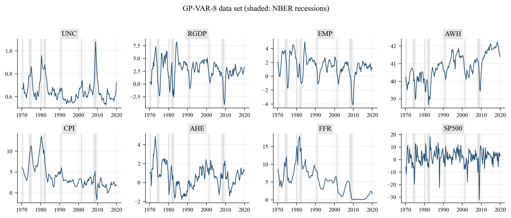
The model is estimated on standardised data with \(p = 5\) lags, stochastic volatility, the semi-automatic \((\kappa,\xi)\) grid (20 × 50 points), 2 000 burn-in and 2 000 posterior draws; GIRFs use 100 evenly spaced posterior draws, all 195 histories and 5 simulated future paths per history. Uncertainty is ordered first (an uncertainty shock moves every variable on impact; the paper shows in Appendix C.2 that the ordering has a negligible effect on the GIRFs — gpvar.ordering_robustness reproduces that check).
5.2 In-sample features (Figures 5 and 6 of the paper)
Posterior means of the "linear shrinkage" \(\omega_{jt}\xi_{j\cdot}\) — the diagonal of the re-scaled kernels — for own and other lags (recessions shaded). As in the paper, less shrinkage is applied to own lags than to other lags and the amount of shrinkage rises sharply in recessions (early 1980s, 2008–09):
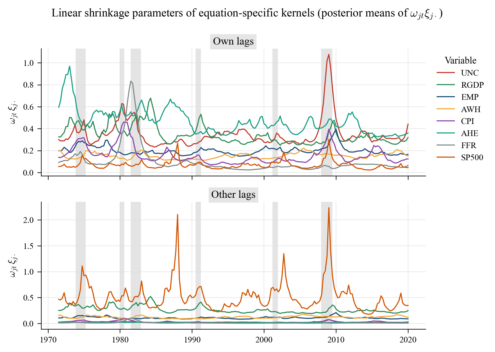
Posterior interquartile ranges of the inverse length scales \(\kappa_{j1}\) (own lags, blue) and \(\kappa_{j2}\) (other lags, green). Own-lag kernels are consistently "rougher" (larger \(\kappa\)) than other-lag kernels, whose effect is close to linear:
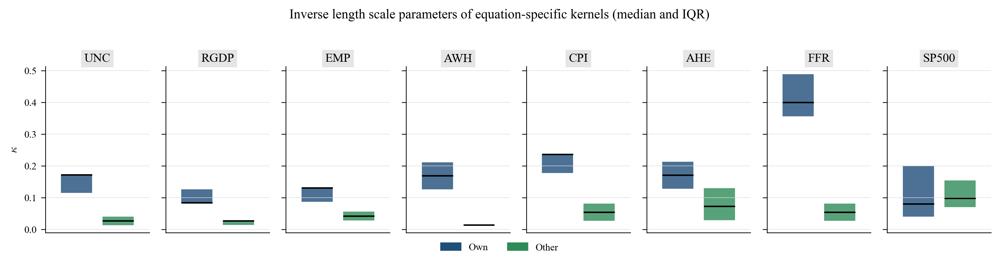
Posterior summaries of the kernel hyperparameters (median and interquartile range; \(\xi\) on the paper's grid \([0.04, 4]\), \(\kappa\) on \([0.1\bar\kappa, 2\bar\kappa]\)) and of the stochastic-volatility state equations. Independence-MH acceptance rates for the log-volatility paths: UNC 0.72, RGDP 0.84, EMP 0.89, AWH 0.80, CPI 0.44, AHE 0.81, FFR 0.09, SP500 0.59 (the FFR equation is the hardest one because its conditional variance collapses at the zero lower bound, as the paper notes).
Kernel hyperparameters (outputs/tables/gpvar8_hyperparameters):
| Variable | kappa own | xi own | kappa other | xi other |
|---|---|---|---|---|
| UNC | 0.171 [0.114, 0.171] | 3.838 [3.677, 4.000] | 0.027 [0.013, 0.040] | 0.121 [0.040, 0.363] |
| RGDP | 0.084 [0.084, 0.126] | 3.515 [3.111, 3.838] | 0.027 [0.014, 0.027] | 2.788 [2.060, 3.434] |
| EMP | 0.130 [0.087, 0.130] | 3.758 [3.515, 3.919] | 0.042 [0.028, 0.056] | 2.060 [1.252, 2.869] |
| AWH | 0.169 [0.126, 0.211] | 3.758 [3.515, 3.919] | 0.014 [0.014, 0.014] | 3.030 [2.464, 3.515] |
| CPI | 0.237 [0.177, 0.237] | 3.919 [3.758, 4.000] | 0.054 [0.027, 0.081] | 0.525 [0.202, 1.010] |
| AHE | 0.170 [0.128, 0.213] | 3.758 [3.596, 3.919] | 0.072 [0.029, 0.130] | 0.040 [0.040, 0.202] |
| FFR | 0.400 [0.356, 0.489] | 3.919 [3.838, 4.000] | 0.054 [0.027, 0.081] | 0.282 [0.040, 0.767] |
| SP500 | 0.080 [0.040, 0.200] | 0.040 [0.040, 0.121] | 0.098 [0.070, 0.154] | 0.929 [0.525, 1.414] |
SV state-equation parameters (outputs/tables/gpvar8_sv_parameters):
| Variable | mu_h | rho_h | sigma^2_h | h_0 |
|---|---|---|---|---|
| UNC | -2.477 [-2.732, -2.230] | 0.789 [0.638, 0.887] | 0.067 [0.037, 0.123] | -2.614 [-3.311, -1.862] |
| RGDP | -2.396 [-2.673, -2.088] | 0.756 [0.564, 0.879] | 0.068 [0.032, 0.154] | -2.424 [-3.160, -1.732] |
| EMP | -2.997 [-3.315, -2.692] | 0.746 [0.557, 0.875] | 0.053 [0.031, 0.103] | -2.980 [-3.583, -2.369] |
| AWH | -3.232 [-3.501, -3.023] | 0.767 [0.559, 0.894] | 0.038 [0.023, 0.068] | -3.033 [-3.493, -2.494] |
| CPI | -3.361 [-3.795, -3.024] | 0.869 [0.771, 0.924] | 0.076 [0.038, 0.122] | -3.446 [-4.242, -2.677] |
| AHE | -2.157 [-2.467, -1.898] | 0.790 [0.590, 0.902] | 0.056 [0.032, 0.102] | -1.938 [-2.573, -1.341] |
| FFR | -4.055 [-4.551, -3.518] | 0.934 [0.889, 0.965] | 0.055 [0.036, 0.079] | -3.875 [-4.700, -3.087] |
| SP500 | -0.945 [-1.498, -0.493] | 0.705 [0.487, 0.841] | 0.304 [0.134, 0.779] | -0.989 [-2.381, 0.287] |
The contemporaneous coefficients of \(Q\) (horseshoe prior) are in outputs/tables/gpvar8_Q.md: e.g. the impact effect of uncertainty on GDP growth, \(q_{\mathrm{RGDP,UNC}}\), has posterior median \(-0.20\) with \(P(q>0)=0.004\).
5.3 Uncertainty shocks: GP-VAR-8 versus a linear BVAR (Figure 7)
Average generalized impulse responses (posterior median and 68 % bands, averaged over all 195 histories) to a positive one-standard-deviation uncertainty shock, compared with the recursive IRFs of a Minnesota BVAR-8 estimated on the same data:

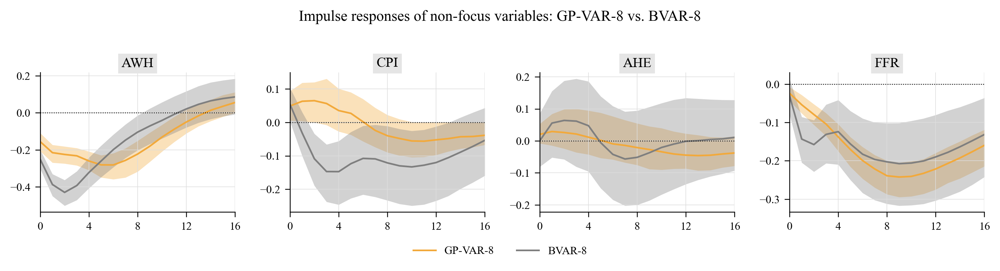
Both models agree on the qualitative picture (higher uncertainty lowers output growth, employment, hours, stock returns and the policy rate), but the GP-VAR responses of real activity peak later (five to six quarters after the shock versus three for the BVAR) and die out more slowly, and stock prices react on impact more mildly than in the linear model. Average GIRFs to a positive one-standard-deviation shock at selected horizons (posterior median and 68 % band, responses in standard-deviation units of the standardised data):
| Variable | h=0 | h=1 | h=4 | h=8 | h=12 | h=16 |
|---|---|---|---|---|---|---|
| UNC | 1.000 [1.000, 1.000] | 0.885 [0.826, 0.919] | 0.679 [0.571, 0.767] | 0.219 [0.139, 0.339] | -0.010 [-0.066, 0.061] | -0.053 [-0.098, -0.004] |
| RGDP | -0.195 [-0.246, -0.120] | -0.289 [-0.340, -0.208] | -0.487 [-0.568, -0.426] | -0.430 [-0.507, -0.335] | -0.100 [-0.165, -0.028] | -0.008 [-0.059, 0.058] |
| EMP | -0.087 [-0.146, -0.052] | -0.192 [-0.250, -0.139] | -0.408 [-0.466, -0.322] | -0.419 [-0.515, -0.338] | -0.163 [-0.250, -0.088] | -0.002 [-0.064, 0.053] |
| AWH | -0.156 [-0.207, -0.109] | -0.215 [-0.269, -0.173] | -0.260 [-0.309, -0.208] | -0.222 [-0.317, -0.151] | -0.050 [-0.111, 0.017] | 0.056 [-0.001, 0.111] |
| CPI | 0.049 [0.006, 0.094] | 0.063 [0.004, 0.119] | 0.035 [-0.027, 0.101] | -0.040 [-0.090, 0.022] | -0.052 [-0.097, -0.000] | -0.039 [-0.067, 0.000] |
| AHE | 0.021 [-0.008, 0.053] | 0.029 [-0.015, 0.084] | 0.012 [-0.042, 0.095] | -0.021 [-0.075, 0.055] | -0.045 [-0.087, 0.023] | -0.038 [-0.078, 0.014] |
| FFR | -0.024 [-0.043, -0.008] | -0.054 [-0.076, -0.028] | -0.138 [-0.175, -0.105] | -0.239 [-0.287, -0.200] | -0.221 [-0.275, -0.180] | -0.160 [-0.214, -0.119] |
| SP500 | -0.071 [-0.204, 0.008] | -0.101 [-0.200, -0.042] | -0.216 [-0.309, -0.152] | -0.090 [-0.124, -0.033] | -0.007 [-0.037, 0.019] | 0.009 [-0.010, 0.026] |
Notes: Responses in standard-deviation units of the (standardised) variables; horizons in quarters.
Peak responses (outputs/tables/gpvar8_girf_peaks) for the three shock configurations:
| shock | variable | impact | peak | peak_horizon | peak_q16 | peak_q84 | cumulative |
|---|---|---|---|---|---|---|---|
| positive 1 sd | UNC | 1.000 | 1.000 | 0 | 1.000 | 1.000 | 5.394 |
| positive 1 sd | RGDP | -0.195 | -0.543 | 6 | -0.631 | -0.450 | -4.740 |
| positive 1 sd | EMP | -0.087 | -0.451 | 6 | -0.547 | -0.368 | -4.323 |
| positive 1 sd | AWH | -0.156 | -0.281 | 6 | -0.358 | -0.218 | -2.488 |
| positive 1 sd | CPI | 0.049 | 0.065 | 2 | -0.000 | 0.120 | -0.150 |
| positive 1 sd | AHE | 0.021 | -0.046 | 13 | -0.093 | 0.018 | -0.249 |
| positive 1 sd | FFR | -0.024 | -0.242 | 9 | -0.295 | -0.204 | -2.903 |
| positive 1 sd | SP500 | -0.071 | -0.216 | 4 | -0.309 | -0.152 | -1.373 |
| negative 1 sd | UNC | -1.000 | -1.000 | 0 | -1.000 | -1.000 | -3.726 |
| negative 1 sd | RGDP | 0.195 | 0.341 | 5 | 0.291 | 0.387 | 3.078 |
| negative 1 sd | EMP | 0.087 | 0.261 | 3 | 0.208 | 0.311 | 2.551 |
| negative 1 sd | AWH | 0.156 | 0.201 | 1 | 0.159 | 0.251 | 1.724 |
| negative 1 sd | CPI | -0.049 | -0.062 | 1 | -0.115 | -0.005 | -0.286 |
| negative 1 sd | AHE | -0.021 | -0.028 | 1 | -0.078 | 0.015 | 0.148 |
| negative 1 sd | FFR | 0.024 | 0.148 | 9 | 0.120 | 0.183 | 1.886 |
| negative 1 sd | SP500 | 0.071 | 0.143 | 4 | 0.094 | 0.195 | 0.871 |
| positive 2 sd | UNC | 2.000 | 2.000 | 0 | 2.000 | 2.000 | 7.534 |
| positive 2 sd | RGDP | -0.390 | -0.847 | 5 | -0.968 | -0.714 | -6.345 |
| positive 2 sd | EMP | -0.174 | -0.709 | 5 | -0.827 | -0.593 | -6.129 |
| positive 2 sd | AWH | -0.311 | -0.440 | 5 | -0.557 | -0.337 | -3.474 |
| positive 2 sd | CPI | 0.098 | 0.112 | 1 | 0.007 | 0.214 | -0.531 |
| positive 2 sd | AHE | 0.041 | -0.064 | 12 | -0.129 | 0.032 | -0.308 |
| positive 2 sd | FFR | -0.048 | -0.357 | 8 | -0.413 | -0.298 | -4.287 |
| positive 2 sd | SP500 | -0.143 | -0.313 | 3 | -0.466 | -0.184 | -1.818 |
Notes: Peak = largest absolute posterior-median response; 68\% credible interval at the peak horizon; cumulative = sum of median responses over 0-16 quarters.
5.4 Sign and size asymmetries (Figures 9 and 10)
Responses to a positive (orange) and a negative (blue) shock, with the negative response mirrored (grey) so that a linear model would give identical orange and grey lines:

Responses to a one- and a two-standard-deviation shock, with the latter halved (grey) — proportionality would make orange and grey coincide:
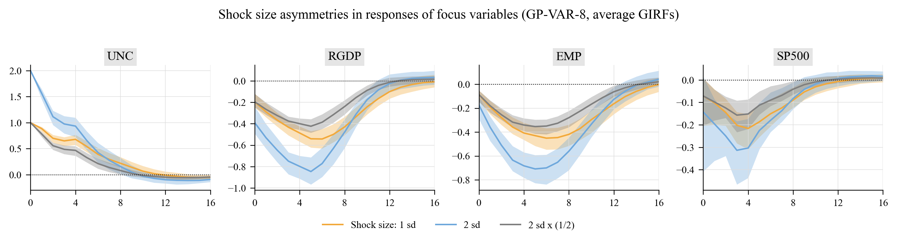
The asymmetries are statistically sharp. Sign asymmetry: posterior median of \(\delta^+_h + \delta^-_h\) (zero under linearity) with the posterior probability that it is positive:
| Variable | h=1 | h=4 | h=8 |
|---|---|---|---|
| UNC | 0.098 (1.00) | 0.291 (1.00) | 0.092 (0.93) |
| RGDP | -0.023 (0.00) | -0.170 (0.00) | -0.178 (0.00) |
| EMP | -0.010 (0.00) | -0.142 (0.00) | -0.197 (0.00) |
| AWH | -0.015 (0.00) | -0.100 (0.00) | -0.090 (0.00) |
| CPI | 0.001 (0.64) | -0.003 (0.46) | -0.043 (0.07) |
| AHE | 0.002 (0.77) | 0.009 (0.65) | -0.000 (0.49) |
| FFR | -0.003 (0.04) | -0.037 (0.00) | -0.094 (0.00) |
| SP500 | -0.022 (0.01) | -0.075 (0.01) | -0.030 (0.16) |
Notes: Under a linear model the responses to positive and negative shocks are mirror images and the statistic is zero.
Positive uncertainty shocks produce a larger endogenous uncertainty response and larger declines in GDP growth, employment, hours and stock returns than the mirror image of negative shocks, which is the paper's central result ("higher unexpected uncertainty has stronger effects on the economy than lower uncertainty"). Size asymmetry: ratio of the response to a 2-sd shock to the response to a 1-sd shock (2 under proportionality):
| Variable | h=1 | h=4 | h=8 |
|---|---|---|---|
| UNC | 1.76 | 1.38 | 0.72 |
| RGDP | 1.84 | 1.64 | 1.11 |
| EMP | 1.88 | 1.67 | 1.34 |
| AWH | 1.83 | 1.62 | 1.26 |
| CPI | 1.76 | 0.51 | 2.62 |
| AHE | 1.95 | 1.05 | 1.50 |
| FFR | 1.90 | 1.68 | 1.50 |
| SP500 | 1.93 | 1.40 | 0.92 |
Notes: Equal to 2 under proportionality (linear model).
Large shocks have less-than-proportional effects on real activity (ratios of 1.6-1.7 at one year), exactly as in Figure 10 of the paper. Peak responses by sub-sample (outputs/tables/gpvar8_girf_peaks_by_period) show that the effects were weakest in the great-inflation period and strongest during the great moderation (peak GDP-growth response \(-0.35\) vs \(-0.68\) standard deviations), in line with the paper's Figure 11.
5.5 Asymmetries over time (Figures 11, 12 and C.6)
Sub-sample averages of the GIRFs (great inflation 1970Q1–1984Q4, great moderation 1985Q1–2006Q4, post-great-moderation 2007Q1–2019Q4):
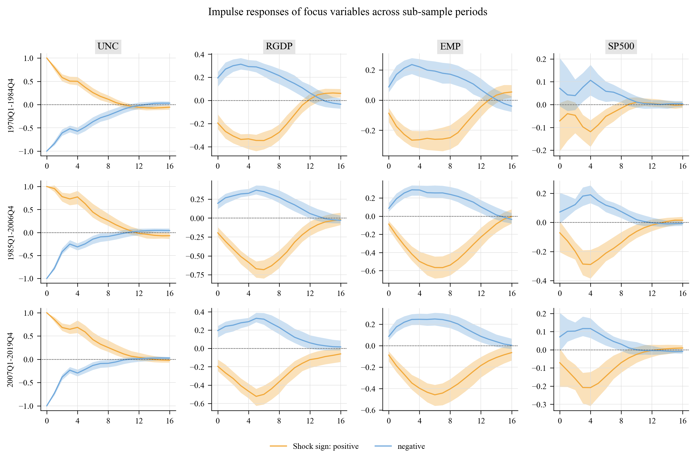
Yearly averages of the posterior-median GIRFs within each sub-sample (yellow = start of the period, red = end):
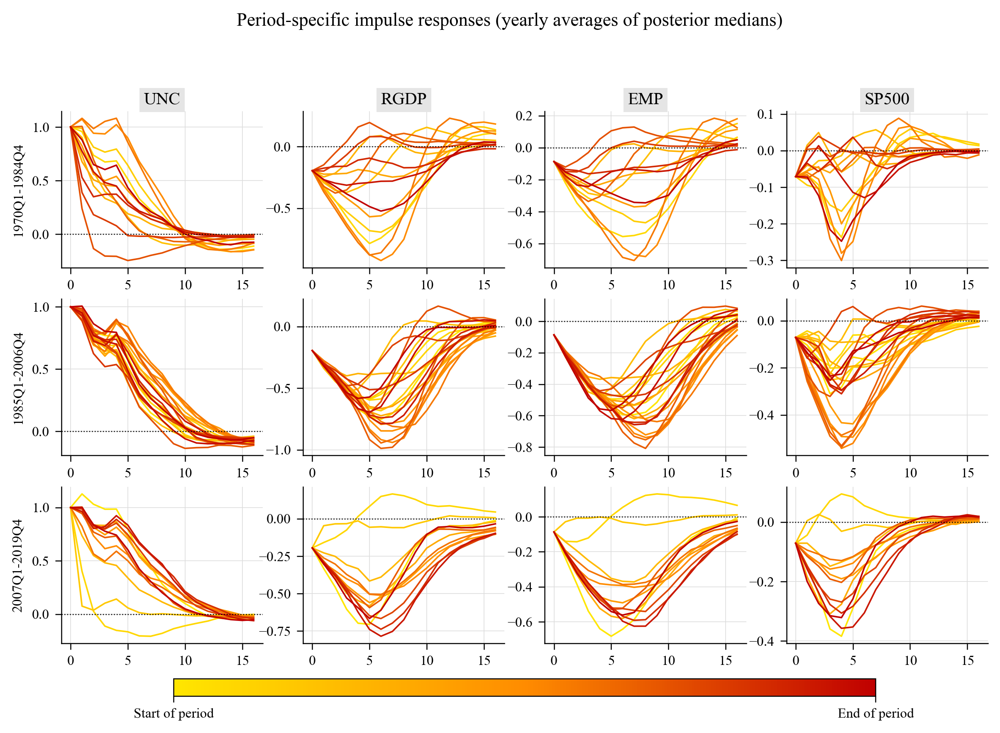
GIRFs conditional on the state of the business cycle (NBER expansions versus recessions):
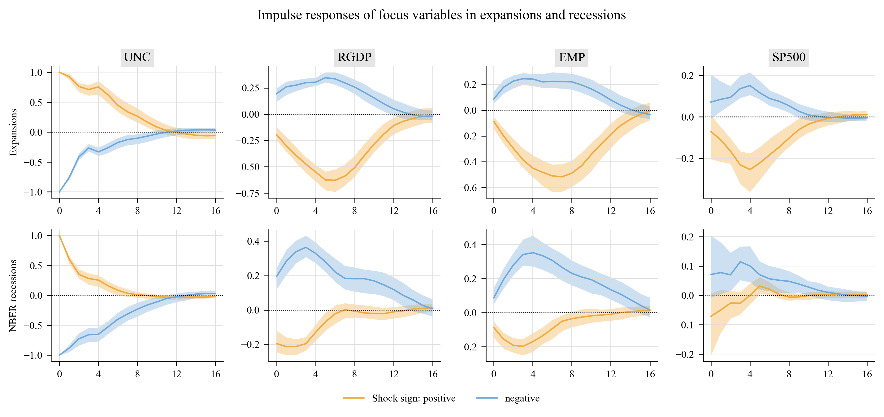
5.6 Volatility, diagnostics and forecasts
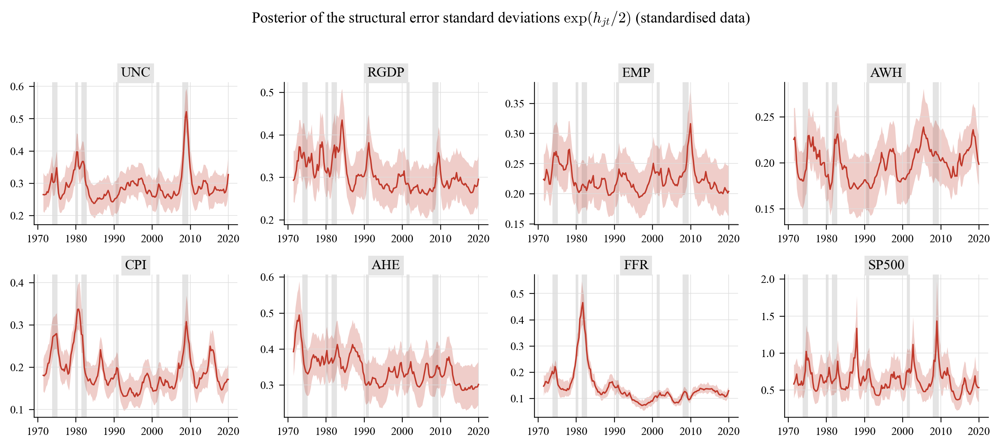
Predictive distribution eight quarters beyond the end of the sample (5/16/50/84/95 % quantiles):
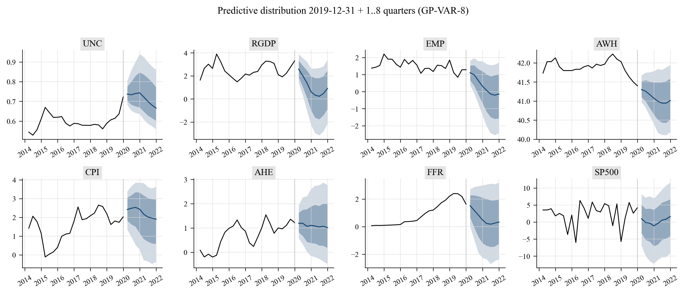
MCMC traces of \(\kappa\), \(\xi\) and \(\rho_h\) per equation are in outputs/figures/gpvar8_mcmc_traces.png; the non-focus-variable versions of every GIRF figure (figC4, figC5, figC7, figC9, figC10) and all tables are in outputs/.
Non-focus variables (Online Appendix C)
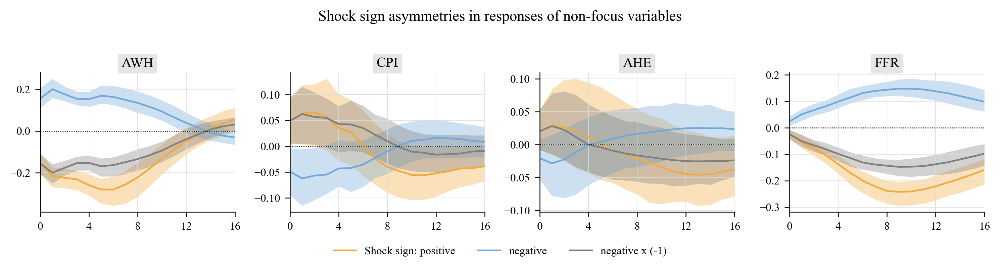
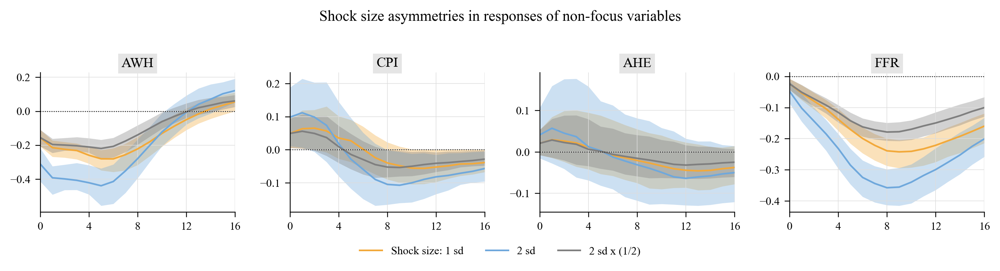
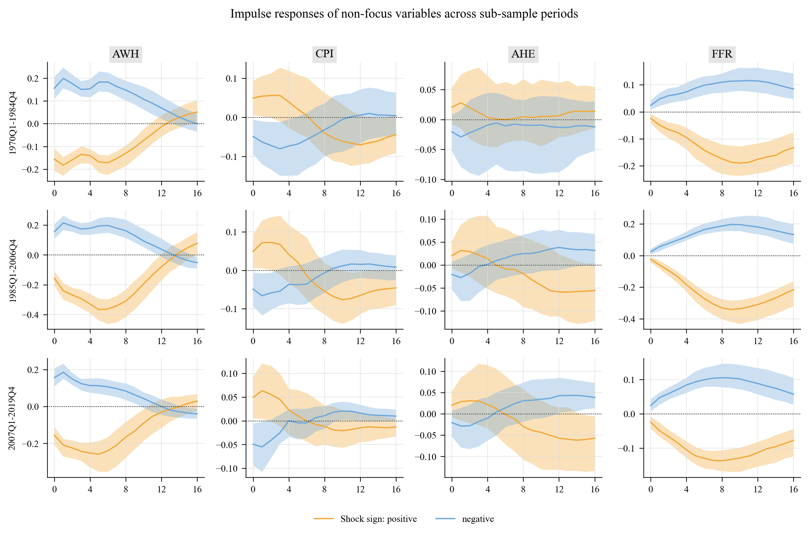
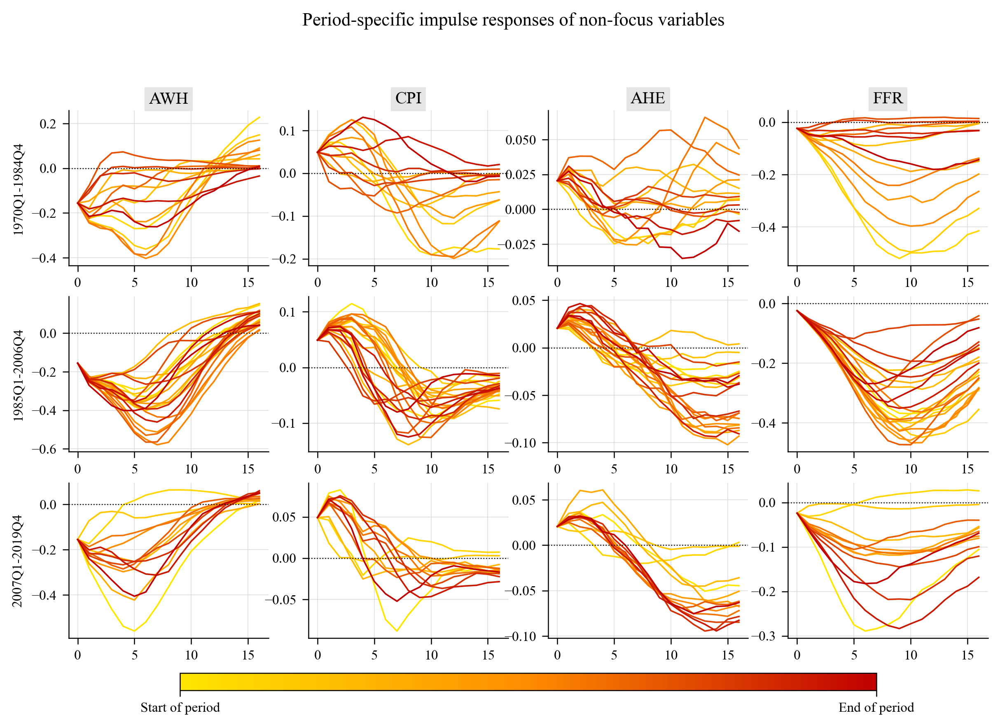
Further tables
Data description (Table B.1 analogue).
| variable | mnemonic | transformation | description |
|---|---|---|---|
| UNC | JLN | 1 | Macroeconomic uncertainty index (Jurado, Ludvigson and Ng, 2015), h = 1 |
| RGDP | GDPC1 | 2 | Real gross domestic product (yoy growth, %) |
| EMP | CE16OV | 2 | Civilian employment (yoy growth, %) |
| AWH | AWHMAN | 1 | Average weekly hours, manufacturing |
| CPI | CPIAUCSL | 2 | Consumer price index, all items (yoy inflation, %) |
| AHE | CES3000000008x | 2 | Real average hourly earnings, manufacturing (yoy growth, %) |
| FFR | FEDFUNDS | 1 | Effective federal funds rate (%) |
| SP500 | S&P 500 | 3 | S&P 500 composite index (qoq return, %) |
Notes: Transformations: 1 none, 2 year-on-year growth rate, 3 quarter-on-quarter growth rate. Sources: FRED-QD (McCracken and Ng, 2020) and Jurado, Ludvigson and Ng (2015).
Descriptive statistics of the GP-VAR-8 data set.
| variable | mean | std | min | max | skew | kurt | AR(1) |
|---|---|---|---|---|---|---|---|
| UNC | 0.651 | 0.095 | 0.529 | 1.078 | 1.646 | 3.084 | 0.930 |
| RGDP | 2.724 | 2.092 | -4.060 | 8.230 | -0.531 | 0.999 | 0.869 |
| EMP | 1.409 | 1.519 | -4.122 | 4.972 | -0.765 | 1.834 | 0.914 |
| AWH | 40.806 | 0.755 | 38.667 | 42.233 | -0.296 | -0.380 | 0.949 |
| CPI | 3.883 | 2.775 | -1.620 | 13.476 | 1.421 | 1.896 | 0.966 |
| AHE | 0.620 | 1.218 | -1.789 | 4.840 | 0.404 | 0.436 | 0.910 |
| FFR | 5.157 | 3.898 | 0.073 | 17.780 | 0.745 | 0.520 | 0.971 |
| SP500 | 1.744 | 6.279 | -31.921 | 18.330 | -1.292 | 4.993 | 0.327 |
Free elements of the contemporaneous matrix Q (horseshoe prior).
| element | mean | q16 | q50 | q84 | P(>0) |
|---|---|---|---|---|---|
| q[RGDP,UNC] | -0.193 | -0.252 | -0.197 | -0.130 | 0.004 |
| q[EMP,UNC] | -0.020 | -0.051 | -0.013 | 0.005 | 0.278 |
| q[EMP,RGDP] | 0.387 | 0.334 | 0.388 | 0.436 | 1.000 |
| q[AWH,UNC] | -0.117 | -0.166 | -0.120 | -0.071 | 0.016 |
| q[AWH,RGDP] | 0.190 | 0.140 | 0.191 | 0.239 | 1.000 |
| q[AWH,EMP] | 0.055 | 0.002 | 0.046 | 0.110 | 0.873 |
| q[CPI,UNC] | 0.061 | 0.011 | 0.059 | 0.109 | 0.916 |
| q[CPI,RGDP] | 0.011 | -0.015 | 0.005 | 0.043 | 0.616 |
| q[CPI,EMP] | 0.081 | 0.022 | 0.083 | 0.131 | 0.945 |
| q[CPI,AWH] | -0.020 | -0.055 | -0.011 | 0.008 | 0.302 |
| q[AHE,UNC] | 0.032 | -0.003 | 0.022 | 0.075 | 0.769 |
| q[AHE,RGDP] | 0.007 | -0.022 | 0.003 | 0.040 | 0.571 |
| q[AHE,EMP] | 0.055 | 0.001 | 0.047 | 0.111 | 0.860 |
| q[AHE,AWH] | -0.017 | -0.056 | -0.009 | 0.015 | 0.351 |
| q[AHE,CPI] | -0.073 | -0.132 | -0.069 | -0.013 | 0.067 |
| q[FFR,UNC] | -0.012 | -0.035 | -0.008 | 0.008 | 0.318 |
| q[FFR,RGDP] | 0.034 | 0.001 | 0.032 | 0.069 | 0.858 |
| q[FFR,EMP] | 0.085 | 0.053 | 0.086 | 0.118 | 0.993 |
| q[FFR,AWH] | 0.018 | -0.006 | 0.012 | 0.045 | 0.736 |
| q[FFR,CPI] | 0.047 | 0.008 | 0.043 | 0.083 | 0.926 |
| q[FFR,AHE] | -0.004 | -0.019 | -0.002 | 0.009 | 0.414 |
| q[SP500,UNC] | -0.100 | -0.220 | -0.073 | 0.000 | 0.172 |
| q[SP500,RGDP] | 0.043 | -0.017 | 0.014 | 0.113 | 0.670 |
| q[SP500,EMP] | -0.168 | -0.322 | -0.150 | -0.011 | 0.100 |
| q[SP500,AWH] | 0.015 | -0.029 | 0.003 | 0.066 | 0.560 |
| q[SP500,CPI] | -0.042 | -0.112 | -0.014 | 0.014 | 0.323 |
| q[SP500,AHE] | -0.047 | -0.116 | -0.026 | 0.006 | 0.247 |
| q[SP500,FFR] | -0.022 | -0.079 | -0.009 | 0.029 | 0.371 |
Average GIRFs to a negative one-standard-deviation shock.
| Variable | h=0 | h=1 | h=4 | h=8 | h=12 | h=16 |
|---|---|---|---|---|---|---|
| UNC | -1.000 [-1.000, -1.000] | -0.782 [-0.814, -0.739] | -0.380 [-0.452, -0.313] | -0.128 [-0.219, -0.051] | 0.011 [-0.054, 0.053] | 0.035 [-0.004, 0.065] |
| RGDP | 0.195 [0.120, 0.246] | 0.264 [0.188, 0.316] | 0.311 [0.274, 0.355] | 0.250 [0.187, 0.315] | 0.060 [-0.000, 0.142] | -0.017 [-0.048, 0.042] |
| EMP | 0.087 [0.052, 0.146] | 0.181 [0.130, 0.240] | 0.258 [0.208, 0.305] | 0.215 [0.164, 0.289] | 0.090 [0.033, 0.160] | -0.026 [-0.058, 0.031] |
| AWH | 0.156 [0.109, 0.207] | 0.201 [0.159, 0.251] | 0.153 [0.117, 0.189] | 0.135 [0.087, 0.189] | 0.039 [-0.010, 0.087] | -0.031 [-0.066, -0.002] |
| CPI | -0.049 [-0.094, -0.006] | -0.062 [-0.115, -0.005] | -0.043 [-0.078, 0.012] | -0.010 [-0.053, 0.033] | 0.016 [-0.023, 0.051] | 0.009 [-0.021, 0.038] |
| AHE | -0.021 [-0.053, 0.008] | -0.028 [-0.078, 0.015] | 0.000 [-0.061, 0.042] | 0.016 [-0.034, 0.056] | 0.025 [-0.016, 0.062] | 0.024 [-0.009, 0.049] |
| FFR | 0.024 [0.008, 0.043] | 0.051 [0.027, 0.071] | 0.099 [0.074, 0.126] | 0.144 [0.120, 0.174] | 0.138 [0.103, 0.178] | 0.098 [0.062, 0.144] |
| SP500 | 0.071 [-0.008, 0.204] | 0.079 [0.023, 0.171] | 0.143 [0.094, 0.195] | 0.055 [0.023, 0.084] | -0.001 [-0.024, 0.023] | -0.005 [-0.017, 0.009] |
Peak responses to a positive shock by sub-sample.
| period | variable | impact | peak | peak_horizon | peak_q16 | peak_q84 | cumulative |
|---|---|---|---|---|---|---|---|
| 1970Q1-1984Q4 | UNC | 1.000 | 1.000 | 0 | 1.000 | 1.000 | 3.977 |
| 1970Q1-1984Q4 | RGDP | -0.195 | -0.347 | 6 | -0.422 | -0.271 | -2.841 |
| 1970Q1-1984Q4 | EMP | -0.087 | -0.265 | 3 | -0.309 | -0.203 | -2.416 |
| 1970Q1-1984Q4 | AWH | -0.156 | -0.182 | 1 | -0.229 | -0.147 | -1.499 |
| 1970Q1-1984Q4 | CPI | 0.049 | -0.070 | 12 | -0.120 | 0.006 | -0.253 |
| 1970Q1-1984Q4 | AHE | 0.021 | 0.028 | 1 | -0.015 | 0.076 | 0.163 |
| 1970Q1-1984Q4 | FFR | -0.024 | -0.189 | 10 | -0.236 | -0.127 | -2.244 |
| 1970Q1-1984Q4 | SP500 | -0.071 | -0.119 | 4 | -0.185 | -0.068 | -0.542 |
| 1985Q1-2006Q4 | UNC | 1.000 | 1.000 | 0 | 1.000 | 1.000 | 5.936 |
| 1985Q1-2006Q4 | RGDP | -0.195 | -0.682 | 6 | -0.799 | -0.557 | -5.859 |
| 1985Q1-2006Q4 | EMP | -0.087 | -0.566 | 7 | -0.678 | -0.441 | -5.432 |
| 1985Q1-2006Q4 | AWH | -0.156 | -0.368 | 5 | -0.441 | -0.294 | -3.214 |
| 1985Q1-2006Q4 | CPI | 0.049 | -0.077 | 10 | -0.139 | -0.001 | -0.268 |
| 1985Q1-2006Q4 | AHE | 0.021 | -0.059 | 13 | -0.123 | 0.016 | -0.341 |
| 1985Q1-2006Q4 | FFR | -0.024 | -0.340 | 9 | -0.419 | -0.284 | -3.957 |
| 1985Q1-2006Q4 | SP500 | -0.071 | -0.289 | 4 | -0.385 | -0.189 | -1.933 |
| 2007Q1-2019Q4 | UNC | 1.000 | 1.000 | 0 | 1.000 | 1.000 | 5.832 |
| 2007Q1-2019Q4 | RGDP | -0.195 | -0.523 | 5 | -0.626 | -0.440 | -4.604 |
| 2007Q1-2019Q4 | EMP | -0.087 | -0.458 | 6 | -0.561 | -0.365 | -4.502 |
| 2007Q1-2019Q4 | AWH | -0.156 | -0.258 | 5 | -0.354 | -0.185 | -2.230 |
| 2007Q1-2019Q4 | CPI | 0.049 | 0.064 | 1 | 0.004 | 0.120 | 0.100 |
| 2007Q1-2019Q4 | AHE | 0.021 | -0.062 | 14 | -0.133 | 0.003 | -0.327 |
| 2007Q1-2019Q4 | FFR | -0.024 | -0.137 | 8 | -0.167 | -0.106 | -1.714 |
| 2007Q1-2019Q4 | SP500 | -0.071 | -0.208 | 4 | -0.308 | -0.122 | -1.328 |
State dependence: dispersion of history-specific responses.
| variable | horizon | mean | sd_across_histories | min | max |
|---|---|---|---|---|---|
| UNC | 1 | 0.869 | 0.242 | -0.608 | 1.241 |
| UNC | 4 | 0.622 | 0.305 | -0.476 | 1.200 |
| UNC | 8 | 0.157 | 0.161 | -0.268 | 0.479 |
| RGDP | 1 | -0.281 | 0.064 | -0.371 | 0.104 |
| RGDP | 4 | -0.467 | 0.234 | -0.856 | 0.269 |
| RGDP | 8 | -0.383 | 0.283 | -0.918 | 0.213 |
| EMP | 1 | -0.191 | 0.040 | -0.250 | 0.025 |
| EMP | 4 | -0.380 | 0.169 | -0.684 | 0.222 |
| EMP | 8 | -0.380 | 0.242 | -0.874 | 0.212 |
| AWH | 1 | -0.216 | 0.052 | -0.315 | 0.020 |
| AWH | 4 | -0.244 | 0.139 | -0.568 | 0.169 |
| AWH | 8 | -0.202 | 0.156 | -0.558 | 0.139 |
| CPI | 1 | 0.063 | 0.021 | -0.045 | 0.095 |
| CPI | 4 | 0.028 | 0.047 | -0.071 | 0.144 |
| CPI | 8 | -0.035 | 0.050 | -0.193 | 0.114 |
| AHE | 1 | 0.028 | 0.008 | -0.003 | 0.048 |
| AHE | 4 | 0.008 | 0.017 | -0.043 | 0.065 |
| AHE | 8 | -0.017 | 0.022 | -0.063 | 0.059 |
| FFR | 1 | -0.054 | 0.014 | -0.072 | 0.012 |
| FFR | 4 | -0.131 | 0.073 | -0.274 | 0.027 |
| FFR | 8 | -0.214 | 0.144 | -0.563 | 0.027 |
| SP500 | 1 | -0.105 | 0.075 | -0.271 | 0.250 |
| SP500 | 4 | -0.208 | 0.160 | -0.556 | 0.299 |
| SP500 | 8 | -0.069 | 0.083 | -0.298 | 0.117 |
Predictive quantiles from the end of the sample (original units).
| variable | horizon | q05 | q16 | q50 | q84 | q95 |
|---|---|---|---|---|---|---|
| UNC | 1 | 0.681 | 0.702 | 0.737 | 0.776 | 0.805 |
| UNC | 4 | 0.636 | 0.670 | 0.744 | 0.847 | 0.940 |
| UNC | 8 | 0.559 | 0.602 | 0.666 | 0.771 | 0.860 |
| RGDP | 1 | 1.356 | 1.863 | 2.583 | 3.326 | 3.872 |
| RGDP | 4 | -2.267 | -0.981 | 0.617 | 1.956 | 2.644 |
| RGDP | 8 | -2.149 | -0.874 | 0.912 | 2.460 | 3.407 |
| EMP | 1 | 0.380 | 0.662 | 1.110 | 1.533 | 1.829 |
| EMP | 4 | -1.391 | -0.671 | 0.321 | 1.195 | 1.782 |
| EMP | 8 | -2.437 | -1.561 | -0.142 | 1.028 | 1.709 |
| AWH | 1 | 40.975 | 41.106 | 41.301 | 41.517 | 41.675 |
| AWH | 4 | 40.394 | 40.645 | 41.074 | 41.485 | 41.782 |
| AWH | 8 | 40.184 | 40.520 | 41.013 | 41.589 | 41.948 |
| CPI | 1 | 1.344 | 1.824 | 2.417 | 3.045 | 3.379 |
| CPI | 4 | 0.270 | 1.151 | 2.432 | 3.318 | 3.844 |
| CPI | 8 | -0.376 | 0.591 | 1.900 | 2.954 | 3.636 |
| AHE | 1 | 0.577 | 0.828 | 1.194 | 1.628 | 1.937 |
| AHE | 4 | -0.155 | 0.379 | 1.105 | 1.891 | 2.615 |
| AHE | 8 | -0.477 | 0.177 | 1.015 | 2.000 | 2.773 |
| FFR | 1 | 0.025 | 0.669 | 1.521 | 2.274 | 2.721 |
| FFR | 4 | -2.272 | -1.193 | 0.495 | 2.103 | 3.002 |
| FFR | 8 | -2.361 | -1.232 | 0.335 | 1.962 | 3.196 |
| SP500 | 1 | -6.899 | -3.224 | 0.953 | 5.032 | 8.141 |
| SP500 | 4 | -12.257 | -7.094 | -1.123 | 3.596 | 6.925 |
| SP500 | 8 | -9.153 | -4.111 | 1.630 | 6.691 | 11.575 |
Average CRPS in the recursive evaluation (lower is better).
| horizon | variable | BVAR-8 | GP-VAR-8 SV | GP-VAR-8 homoskedastic |
|---|---|---|---|---|
| 1 | CPI | 0.541 | 0.672 | 0.731 |
| 1 | FFR | 0.648 | 0.691 | 0.770 |
| 1 | RGDP | 0.712 | 0.759 | 0.758 |
| 4 | CPI | 1.217 | 0.927 | 1.080 |
| 4 | FFR | 1.603 | 1.323 | 1.496 |
| 4 | RGDP | 1.589 | 1.167 | 1.124 |
MCMC diagnostics
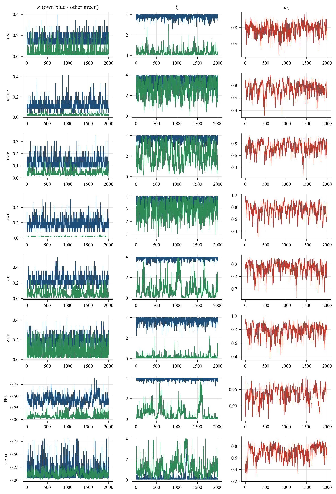
Simulation study (Section 4 of the paper)
examples/02_simulation_study.py simulates the paper's three-equation DGP (linear equation with \(t_3\) shocks, structural break at \(t=100\), sine/quadratic non-linearities, random-walk SV, T = 200) and fits the GP-VAR. Posterior of \(f_j\), \(g_j\), \(m_j = f_j+g_j\) and \(y_j\) (red, 90 % bands) against the truth (black) — the analogue of the paper's Figure 3:
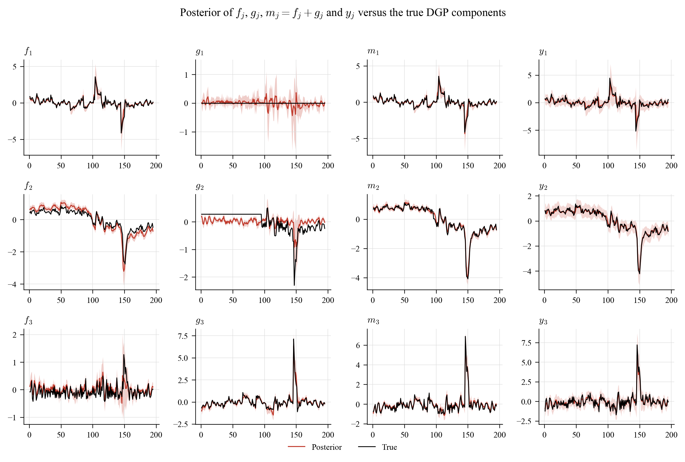
Correlation between the posterior median of \(m_j\) and the true conditional mean over Monte Carlo replications of the DGP (the analogue of Table 1 of the paper, where the authors report 0.945, 0.929 and 0.754 over 100 replications):
| m1 | m2 | m3 | |
|---|---|---|---|
| Avg. | 0.987 | 0.965 | 0.925 |
| SD |
Notes: Results from 1 realisations of the Section 4 DGP with T = 200. Avg. is the average correlation, SD the standard deviation across realisations.
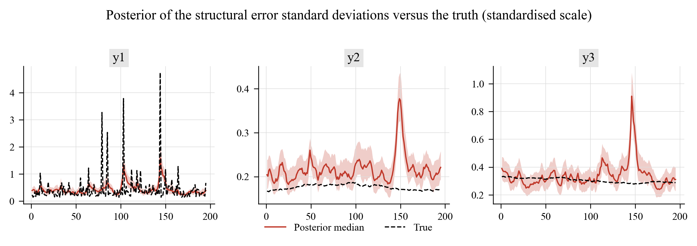
GP regression illustration (Section 2 of the paper)
examples/01_gp_regression_illustration.py reproduces the univariate illustrations with the bundled data: US inflation on a linear trend (Figure 1), GDP growth on lagged macroeconomic uncertainty (Figure 2, below) and the persistence kernel of Appendix A.1. The role of \(\kappa\) is exactly as described in the paper: \(\kappa=0.01\) is essentially linear, \(\kappa=0.1\) reveals the threshold at which high uncertainty starts to depress growth, \(\kappa=4\) over-fits.
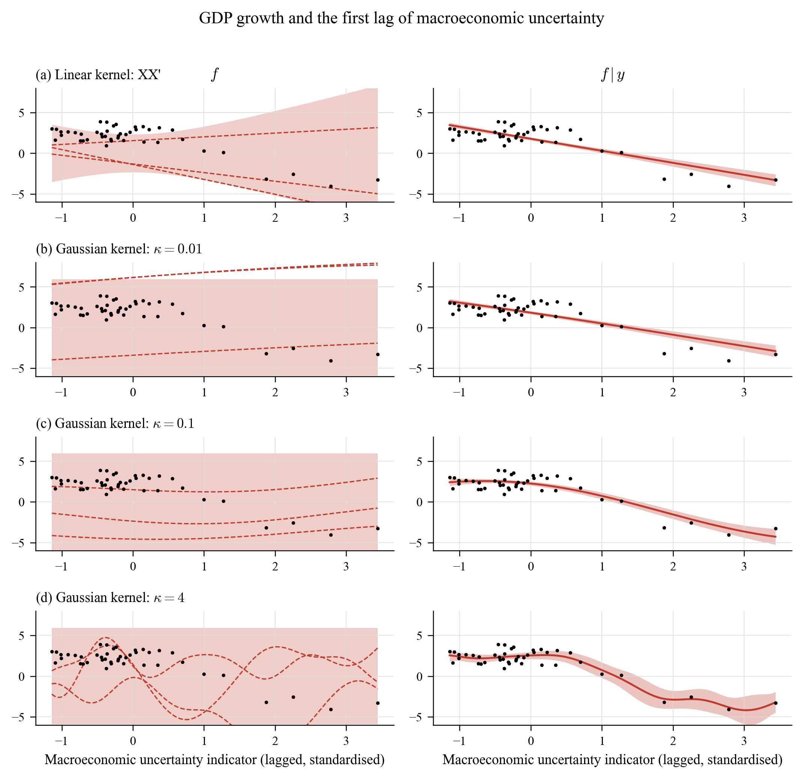
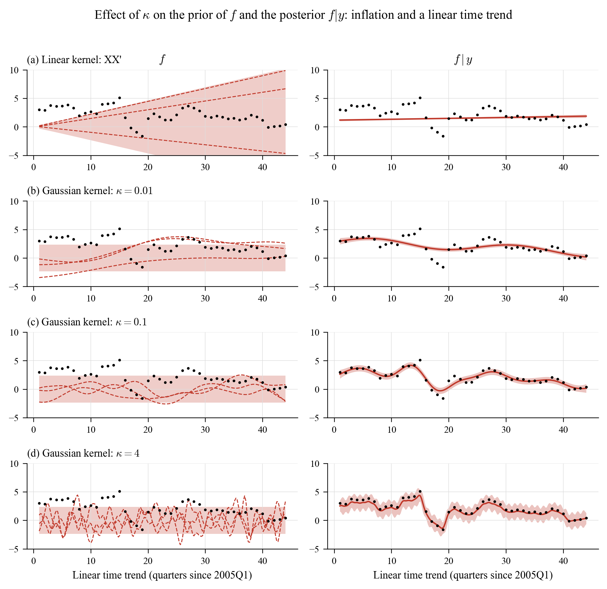
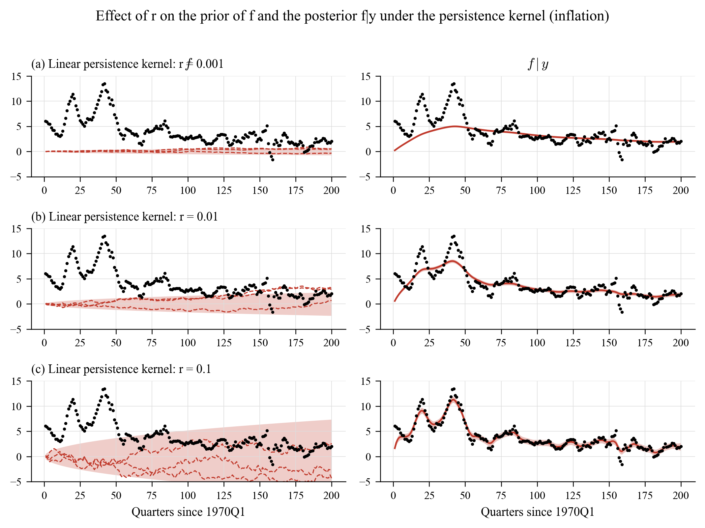
Forecast evaluation (Section 5.2 of the paper)
examples/04_forecast_evaluation.py runs the recursive (expanding-window) exercise for the GP-VAR-8 with SV, the homoskedastic GP-VAR-8 and a Minnesota BVAR-8, scoring one- and four-quarter-ahead density forecasts of RGDP, CPI and FFR with log predictive likelihoods (jointly and marginally) and CRPS. Log predictive Bayes factors relative to the BVAR (positive = better):
| variable | GP-VAR-8 SV (h=1) | GP-VAR-8 SV (h=4) | GP-VAR-8 homoskedastic (h=1) | GP-VAR-8 homoskedastic (h=4) | BVAR-8 (h=1) | BVAR-8 (h=4) | BVAR-8 (LPL) (h=1) | BVAR-8 (LPL) (h=4) |
|---|---|---|---|---|---|---|---|---|
| joint | -4.57 | 3.92 | -7.55 | 3.33 | 0.00 | 0.00 | -38.18 | -62.66 |
| RGDP | -0.73 | 2.74 | -0.42 | 4.12 | 0.00 | 0.00 | -14.51 | -24.63 |
| CPI | -2.18 | 2.67 | -4.26 | -0.01 | 0.00 | 0.00 | -10.96 | -20.01 |
| FFR | -1.22 | 1.76 | -2.13 | 0.73 | 0.00 | 0.00 | -12.96 | -23.74 |
Notes: Recursive design, origins 2007Q4 to 2018Q4 every 4 quarters; joint = RGDP, CPI and FFR. The last column block reports the benchmark's log predictive likelihoods.
Average CRPS by model, horizon and variable is in outputs/tables/table02b_crps.md.
With 12 annual origins (2007Q4–2018Q4, 400 + 400 MCMC draws per origin), the GP-VAR-8 with SV improves on the linear benchmark at the one-year horizon (joint LPBF +3.9; +2.7 for GDP growth, +2.7 for inflation, +1.8 for the funds rate) while the BVAR is better one quarter ahead, the same horizon pattern the paper reports in Table 2 (gains in predictive accuracy increase with the forecast horizon). The homoskedastic GP-VAR is close to the SV version at h = 4 but clearly worse at h = 1 for inflation and the funds rate, again as in the paper. Cumulative joint LPBFs over the evaluation sample:
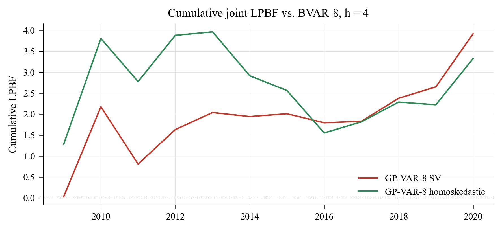
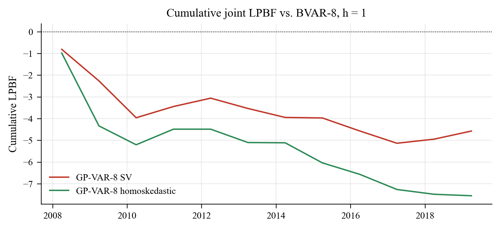